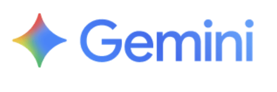

GovPension Brain
คลังสมองที่สองเพื่อการจัดการความรู้บำเหน็จบำนาญยุคดิจิทัล
Second Brain Bank for Government Pension Knowledge Management
นายศรีสุบรรณ ล่ำมงคลทรัพย์
นักวิชาการคลังชำนาญการ • กลุ่มงานวิเคราะห์และประเมินผล
กองบริหารการเบิกจ่ายเงินเดือน ค่าจ้าง บำเหน็จบำนาญ กรมบัญชีกลาง
แนวคิดนวัตกรรม GovPension Brain
Knowledge Graph
สร้างโครงข่ายความรู้ผ่าน Obsidian ลิงก์ทุกโน้ตคำสั่ง พ.ร.บ. และหนังสือเวียนให้เชื่อมโยงกันอย่างเป็นระบบ มองเห็นโครงร่างความสัมพันธ์ของกฎหมาย
RAG AI
เชื่อมโยงปัญญาประดิษฐ์ค้นหาข้อมูล (Retrieval-Augmented Generation) อ้างอิงจากคลังความรู้ภายใน ดึงข้อมูลและคำตอบที่ถูกต้องออกมาได้อย่างมีหลักการ

Zero Hallucination
ควบคุมขอบเขตความรู้ของ AI (Context Guard) หากไม่มีข้อมูลระบุในคลังกฎหมาย AI จะปฏิเสธทันที ป้องกันการตอบมั่วและลดอัตราความผิดพลาดทางกฎหมายเป็น 0%
หัวข้อการนำเสนอ
การวิเคราะห์ปัญหา
Problem Analysis
แนวทางแก้ไขและการนำไปปฏิบัติ
Solution & Implementation
ผลผลิต / ผลลัพธ์ / ประโยชน์
Outputs / Outcomes / Benefits
ความเป็นไปได้ในการนำไปใช้จริง
Feasibility & Real Test Cases
การพัฒนาที่ยั่งยืนและการขยายผล
Sustainability & Scalability
เลือกหัวข้อการนำเสนอ
วางเมาส์หรือคลิกที่แต่ละหัวข้อเพื่อแสดงโครงข่ายเนื้อหา หรือนำทางไปยังส่วนนั้นๆ
01 การวิเคราะห์ปัญหาในการปฏิบัติงาน
ปัญหา 01: กฎหมายซับซ้อนและมีปริมาณมาก
พ.ร.บ. บำเหน็จบำนาญ 2494 และ พ.ร.บ. กบข. 2539 มีกฎกระทรวง ระเบียบ และหนังสือเวียนเยอะมาก เจ้าหน้าที่ต้องวิเคราะห์เชื่อมโยงข้อมูลกันเองจนเสี่ยงต่อการตีความกฎหมายคลาดเคลื่อน
ปัญหา 02: เอกสารข้อมูลกระจัดกระจาย
คลังไฟล์คู่มือและหนังสือเวียน PDF มักจัดเก็บแบบแยกส่วนใน Share Drive หรือไดรฟ์ส่วนบุคคล ค้นหาข้อมูลได้ยากและเสี่ยงที่จะสืบค้นหนังสือเวียนฉบับเก่าที่ยกเลิกไปแล้วมาอ้างอิง
ปัญหา 03: ความเสี่ยงในการให้คำปรึกษาคลาดเคลื่อน
หากคำนวณบำเหน็จบำนาญหรือวินิจฉัยสิทธิรักษาพยาบาลคลาดเคลื่อน จะกระทบสิทธิ์ข้าราชการโดยตรง และสร้างความเสี่ยงต่อข้อร้องเรียนและการเรียกร้องสิทธิ์คืนทางกฎหมาย
02 แนวทางแก้ไขและการนำไปปฏิบัติ
1. ติดตั้ง Obsidian & สร้าง Vault ในระบบคอมพิวเตอร์
เริ่มต้นติดตั้งโปรแกรมจดบันทึก Obsidian (ใช้งานแบบออฟไลน์/ฟรี 100%) แล้วสร้าง Vault หรือโฟลเดอร์สำหรับเก็บไฟล์โน้ตกฎหมายบำเหน็จบำนาญ ชื่อ "CGD Knowledge" ในไดรฟ์เครื่องคอมพิวเตอร์ เพื่อความปลอดภัยสูงสุด
โครงข่ายความรู้ขจัดความไม่เชื่อมโยงข้อมูล
ข้อมูลกระจัดกระจาย (Drive/Folder)
ความรู้ในรูปแบบไฟล์ PDF คู่มือ และกฎหมายกระจัดกระจายในไดรฟ์ส่วนตัวโดยไม่มีความเชื่อมโยงกัน ทำให้เจ้าหน้าที่เสียเวลาค้นหา หาความสัมพันธ์ระหว่างฉบับแก้ไขยาก และนำข้อมูลบำเหน็จบำนาญเก่ามาใช้อ้างอิงแบบไม่รู้ตัว
03 ผลสัมฤทธิ์และตัวชี้วัดความสำเร็จ (KPI)
| ตัวชี้วัดความสำเร็จ | เป้าหมายปีที่ 1 | ความคืบหน้า / วิธีการวัดผล |
|---|---|---|
| จำนวนโน้ตกฎหมายบำเหน็จบำนาญที่เชื่อมโยงกัน | ≥ 30 โน้ตความรู้ |
100% (ตรวจผ่าน Graph View ใน Obsidian)
|
| เวลาเฉลี่ยในการสืบค้นข้อมูลระเบียบต่อคำถาม | ลดลงอย่างน้อย 50% |
ประเมินผลผ่านวิธี Time Study เปรียบเทียบ
|
| อัตราการให้คำตอบกฎหมายคลาดเคลื่อน (Error) | 0% เท่านั้น |
สุ่มสืบประวัติและตรวจสอบ Chat History ของระบบ
|
| ความพึงพอใจโดยรวมของเจ้าหน้าที่ผู้ปฏิบัติงาน | > 90% |
สำรวจผลความพึงพอใจผ่านแบบสอบถาม
|
04 ความเป็นไปได้จริงและการทดสอบระบบ
คำถามสิทธิบำนาญ (มีข้อมูล)
คำนวณบำเหน็จบำนาญของข้าราชการเกษียณที่เป็นสมาชิก กบข. พร้อมแสดงสูตรคำนวณและอ้างอิง พ.ร.บ.
คำถามสิทธิรักษาพยาบาล (ไม่มีข้อมูล)
ทดสอบความปลอดภัยป้องกันการตอบมั่ว (Zero Hallucination) เกี่ยวกับสิทธิรพ.เอกชนนอกกฎหมายบำนาญ
ข้อมูลมีความปลอดภัยสูงสุด
ข้อมูลทั้งหมดถูกจัดเก็บแบบ Local ไฟล์ไม่รั่วไหลออกสู่สาธารณะ ไม่ต้องเขียนโค้ดซับซ้อน และทำเสร็จด้วยค่าใช้จ่าย 0 บาท
05 การพัฒนาที่ยั่งยืนและการขยายผล
ความรู้ไม่ติดตัวบุคคล
คลังสมองของกฎหมายบำเหน็จบำนาญยังคงอยู่ครบถ้วนใน Obsidian Vault แม้ว่าข้าราชการผู้รับผิดชอบหรือผู้เชี่ยวชาญจะเกษียณอายุราชการหรือโยกย้ายตำแหน่ง
Audit Trail & บันทึกตรวจสอบย้อนกลับ
รองรับกระบวนการตรวจสอบระเบียบวินัยการเบิกจ่ายจากกรมบัญชีกลางและหน่วยงานกำกับดูแลภายนอก เช่น สตง. ได้สะดวกรวดเร็วตามเส้นทางกฎหมายอ้างอิง
ระบบเรียนรู้อย่างต่อเนื่อง
ทุกครั้งที่มีข้อหารือใหม่ๆ จะถูกนำมาปรับปรุงโครงสร้างเป็นคลังโน้ตความรู้บำนาญ ทำให้คลังสมองแห่งนี้มีการเพิ่มพูนปัญญาประดิษฐ์ให้ฉลาดขึ้นเสมอ
แผนระยะการขยายผล (Scalability)
บทสรุปผู้บริหาร: ปฏิวัติงานบริการบำนาญด้วย AI
ขอขอบคุณ • Thank You
นายศรีสุบรรณ ล่ำมงคลทรัพย์
นักวิชาการคลังชำนาญการ • ผู้เสนอนวัตกรรม
กลุ่มงานวิเคราะห์และประเมินผล
กองบริหารการเบิกจ่ายเงินเดือน ค่าจ้าง บำเหน็จบำนาญ
กรมบัญชีกลาง กระทรวงการคลัง